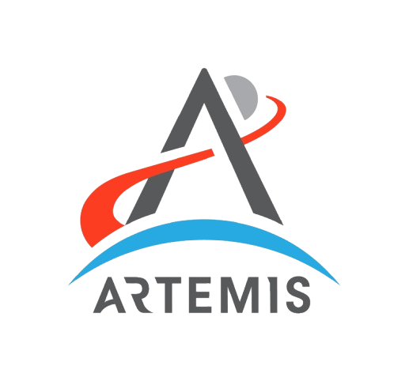

Experience
Where I've built, shipped, and learned.
Skills
BACKEND
FastAPI, Express, Next.js, Spring Boot
DATABASES
PostgreSQL, Redis, MongoDB, Neo4j
ML / AI
Ray, Triton, Tensorflow, MXNet, Fortran
SYSTEM DESIGN
HLD / LLD, infra-aware APIs
LANGUAGES
Python, Go, Rust, TypeScript, Java
TOOLS
AWS, Docker, Git, Linux, LaTeX, Terraform
Timeline
Research Fellow
University of California, Berkeley
2025-2026

Designed and evaluated world-model architectures for spatial reasoning, improving long-horizon prediction accuracy by ~18–25% on simulated navigation and embodied AI benchmarks.
Led experiments across 10k–100k+ simulated trajectories, developing data pipelines and evaluation metrics that reduced training instability and cut experiment iteration time by ~30%.
Implemented relational spatial reasoning modules inspired by quantum entanglement to model object-to-object and scene-level constraints, reducing combinatorial search overhead; collaborated within a 5–8 person research team on reusable research code and publications.
Machine Learning and System Architect — Artemis 1
NASA — National Aeronautics and Space Administration · Apprenticeship
Nov 2019 – Jun 2024 · 4 yrs 8 mos

Worked on ML-driven big data analysis and predictive modeling for Artemis I’s Orion spacecraft trajectory and propulsion systems, integrating algorithmic insights with real-world hardware and flight control simulations.
Collaborated with SRAG (Space Radiation Analysis Group, JSC) to correlate onboard FDIR fault events with real-time space weather and SAA transit data, supporting predictive modeling of radiation-induced SEUs in flight avionics and informing ops constraints during high-intensity crossing windows.
Machine Learning Engineer
NASA Jet Propulsion Laboratory
Jul 2021 – May 2024 · 2 yrs 11 mos
Architected Project Callisto (internet-independent voice AI on a human-rated spacecraft): retrained Alexa wake-word CNN for 60–70 dB cabin acoustics, driving near-zero false-positive activations through hardware validation at Lockheed Martin (Denver).
Owned OpNav end-to-end for Artemis I; processed 1,000+ images across 26 passes, achieved 3σ certification in 4 passes, qualifying autonomous return navigation if DSN contact were lost at 384,000 km. · Flight-certified
GN&C software to NASA NPR 7150.2 Class A within cFS; implemented UDU covariance factorisation across 500+ Monte Carlo trajectories, cleared the pre-launch OIMU-1 anomaly at Flight Readiness Review, and delivered 0 open MISRA C:2012 Required-rule findings.
Built a DSN latency-tolerant transport layer and Artemis I BET reconstruction; replaced TCP at 2.56 s RTT with CCSDS-native FEC enabling live Mission Control video from 384,000 km, and fused 5 data sources post mission into ground truth for Artemis II algorithm updates.
Reinforce (AI/ML Club) — President
Scaler School of Technology
2025 — Present
Mentoring and leading AI/ML workshops for undergraduates
Organizing hands-on sessions on deep learning and classical mathematics
Education
Bachelor’s in Computer Science
Birla Institute of Technology and Science, Pilani
2024–2028
Highlights
Analyzed over 10TB of flight and ground-test telemetry to optimize GN&C systems and propulsion control models.
Designed and built energy-based architectures from scratch and scaled them for production use.
Handled complex ML pipelines with deployment on GPU clusters at scale.
Designed workflows for a few high-value startups as an advisor.